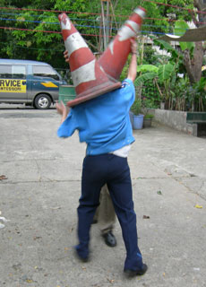

|
PHILIPPINE BLISS
KHAVN | Phil. 2008 | 80 Min.
Material: Mini DV
Format: Mini DV
Originalsprache: Tagalog
Drehbuch: KHAVN
Kamera: Albert Banzon
Schnitt: Lawrence S. Ang
Sound Design: Lawrence S. Ang
Musik: Ria Munoz
Mit Neil Elpusan, Reinier Lucien,
JV Katipunan, Menk Cruzat,
Therese Carlos, Lara Tarranco,
Damaso u.a.
Produktion: Filmless Films, Khavn de la Cruz
Deutsche Erstaufführung
Keine Doku-Soap. Im Stil des beliebten Fernsehformats wird das harte Leben von sechs Menschen in der Siedlung B.L.I.S.S. in Manila erzählt. Die Siedlung wurde während des Ausnahmezustands vom früheren philippinischen Präsidenten Ferdinand Marcos gebaut. Alle Protagonisten tragen Namen, die auf bekannte Charaktere aus den Romanen des Nationalhelden Jose Rizal anspielen. Die Geschichten über Verlust, Sehnsucht und Hoffnungslosigkeit kreuzen sich in dem dichtbesiedelten öffentlichen Raum. Sie sind oft tragikomisch, und unvermeidlichen aufgeladen mit dem typisch philippinischen Sinn für Hoffnung.
KHAVN kulas talon Delakrus, so der volle Name des Enfant terrible der Filipino Wave, wurde 1973 in Manila geboren. Er ist Filmemacher, Dichter, Autor und Komponist. Er ist mit 19 Lang- und 60 Kurzfilmen der produktivste der Filmemacher der "digitalen Generation". Seit 2002 ist er Leiter des philippinischen MOV Digitalfilmfestivals. Er ist Sänger und Komponist in der Pianokombo "Delakrus" und der art-Rockband "The Brockas".
Filme (Auswahl): Philippine Bliss 2008 | The Muzzled Horse Of An Engineer In Search Of Mechanical Saddles 2008 | Ultimo 2007 (UNDERDOX 02) | Squatterpunk 2007 (UNDERDOX 02) | An Open Letter to all the Terrorists of the World 2006| G-string Kings 2006 | Waiting for a Super Hero 2005 | Lata at tsinelas 2004 | The Family that Easts Soil 2004
zurück
|